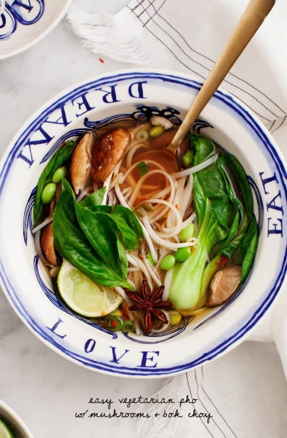

Vegetarian Pho

Vegetarian Pho
It's hot, flavorful, and comforting, but it still feels nice and fresh. This noodle soup features
a rich, aromatic broth and rice noodles. Served with garnishes like fresh herbs, bean sprouts,
and hoison sauce. The broth gets its flavour from spices, aromatic veggies and shiitake mushrooms.
Ingredients
- 2 star anise
- 1 cinnamon stick
- 1 tablespoon whole peppercorns
- 1/4 teaspoon whole cloves
- 5 cups water
- 1/2 brown onion
- 2 garlic cloves
- 1 2-inch piece of fresh ginger
- 4 ounces shiitakemushrooms
- 1/4cup tamari
- 1 tablespoon rice vinegar
- 2 scallions, finely chopped
- 2 baby bok choy, sliced lengthwise into quarters
- 1/2cup frozen edamame
- 4 ounces cooked rice noodles
Instructions
- In a medium pot over low heat, combine the star anise, cinnamon
stick, peppercorns, and cloves and stir until fragrant, about 30 seconds.
- Add the waater, onion, garlic, ginger, and the shiitake mushrooms.
Simmer for 20 minutes, then strain and return the liquid back to the pot.
- Slice the shiitake mushrooms caps and add them to the pot along
with the tamari, rice vinegar, and scallions. Simmer 15 minutes.
- Add the bok choy and edamame and cook until tender, 5-8 minutes
Taste and season with more tamari for depth of flavour, and more
rice vinegar for tang, as desired.
- Laddle the soup into 2 bowls over the cooked rice noodles.
Serve with the lime slices, sprouts, herbs, sriracha, chili peppers,
and more tamari on the side.